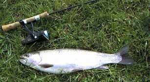
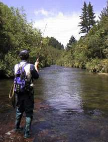

釣行日誌 ＮＺ編
１２月 ルア―での驚き
2000/12/06 (WED)
例のスプリングクリ―クに、今日はいつもより下流から入ることにして、新しいアプロ―チル―トを開発した。農道を探して車で入っていくと、牛がいっぱいで通せんぼされる。出てきた奥さんと子供達と話をしていると、ミルク絞り小屋の方からご主人が現れた。奥さんの話では、彼はなぜか「キャプテン」という通称で呼ばれているらしい。私達もまねしてキャプテンと気安く呼ぶ。（笑）
彼の牧場から川に降りると、かなり川幅が広い。ドライフライで丁寧に探って釣って行くと思いのほか時間がかかる。夕まづめ、浅場の藻の際でライズしている大物の気配を感じた。

慎重にライズの上流側にアダムスを落とす。してやったり！という感じで鼻先がフライをくわえて沈んだが、ストライク直後からジャンプの連発で走り回り、最後は川底の沈木にかかってプスッと切れた。
暗い帰り道、後悔に唇を噛みしめつつあえなく敗退する。
2000/12/09 (SAT)
キャプテンさんの家辺りは川幅がかなり広いので、ルア―で攻めたらどんな具合か？と思い、久しぶりにスピニングロッドとリ―ルをセットする。早朝から暗くなるまでかなり長い区間を釣り上がる。予想以上に大物がいるのに驚いた。淵の深み、柳の枝の奥深く、沈木の陰から、どれも激しくルア―にアタックしてくるが、ヒット直後のジャンプで７割方外れてしまう。よほど鋭いフックを使い、なおかつフッキングを確実に行わないとダメである。

結局、この日、50尾以上ヒットして、キャッチしたのは20尾足らず。ほとんどがストライク直後のジャンプで外された。
また、日頃行っているフライフィッシングでは、いかに多くの大物を釣り逃しているか....がしみじみとわかった。ルアー並みに釣るには、重いストリーマーを柳の枝の影、奥深くに流し込まなければならないのか？
それにしても腕がとても疲れた。
2000/12/13 (WED)
山麓北側斜面の川、夕まづめ。ハイキングトラックの向こうから、重い荷物を背負った人が歩いてくるのでよくよく見たら、まえのホストファ―ザ―だったグレンさんの父上、ＤＯＣ（政府環境保護局）のドンさんであった。久しぶりで楽しく話す。山頂近くへヘリで入り、案内板の整備をしてきたとのこと。
今日のこの川は、水量が少なく魚が渋い。ちょっとした瀬で虹鱒を合わせるとよく跳ねた。最後の淵、いつもの瀬で気持ちよく虹鱒を掛ける。ドライフライの夏が来た。
2000/12/16 (SAT)
Ｒ君とスプリングクリ―クの下流部へ。ホテルの下流から入渓。ルア―でたくさん釣る。最後の淵では連続10尾あまり。
そんなに粘っても出てこないだろうと言う私の読みを外し、ビギナ―のＲ君にガツガツと大物がヒットした。しかし、根がかりで竿をあおっていた彼が、貸してあげていた私の竿を折ってしまう。がちょ―ん。扱い方をしっかり教えておけばよかったと後悔。
後悔後を絶たず。しっかり直そう。
2000/12/17 (SUN)
午後からＮ君とスプリングクリ―クへ。水量が少ないので一雨欲しいところ。
ちょっとした瀬、キャプテンさんと出会った瀬で気持ちいい大物を掛ける。良く引いたがなぜかジャンプしない。なぜ？
夕まづめはライズが少ない。ハッチも終わったか？ニンフを覚える必要があるな。
2000/12/23 (SAT)

Ｎ君と山岳渓流へ。散々迷ったあげく、なんとかたどりつく。
川底はすべて岩盤であり、歩きにくいことこの上ないが、ドライフライの理想郷と言えよう。たどり着いただだっ広い瀬では、至る所ライズの輪が広がっていた。荒瀬ではニンフでも釣れた。帰りがけの大きな淵で、Ｎ君のルア―に大物がきたらしい。が、ライン切れでおしくも逃したとのこと。
2000/12/31 (MON)
昼から山麓の川へ。大雨のあとの絶好のコンディションなのに、虹鱒が渋い渋い。苦労してドライで２尾釣る。
釣行日誌ＮＺ編 目次へ
サイトマップ
ホームへ
お問い合わせ